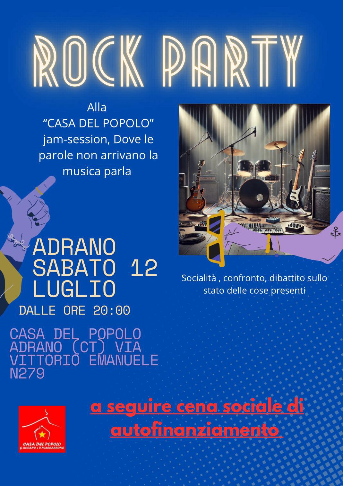

Iniziativa di Musica e Confronto
Una jam-session dove le parole non arrivano, la musica parla.

Dibattito pubblico - La Repressione del dissenso
Il 17 gennaio si compiono 75 anni da quando il giovane bracciante comunista Girolamo Rosano venne assassinato mentre partecipava ad una manifestazione per la pace e contro l’invio di truppe italiane per assistere gli USA nell’ennesima aggressione imperialista, in quell’anno nei confronti dellla Corea. Oggi come allora, gli Stati Uniti e i suoi alleati europei insieme alla NATO, muovono guerre, rovesciano governi legittimi e sottraggono ricchezze ad intere popolazioni, in barba al diritto internazionale; il rapimento del presidente venezuelano Nicolás Maduro è l’esempio più recente. Oggi come allora un gran parte della popolazione scende in piazza contro governi che giustificano, autorizzano e finanziano le guerre imperialiste. Oggi come allora i governi di questi paesi, che si definiscono democratici, reprimono ferocemente le manifestazioni di dissenso, come abbiamo visto è stato fatto nei confronti di chi manifestava per la Palestina qui in Italia, come in Francia o in Germania. In questo contesto non stupisce che quest’anno sia stato approvato il “Decreto Sicurezza” che ha modificato il nostro codice penale introducendo nuovi reati ed inasprendo alcune delle pene già esistenti. Di tutto questo parleremo sabato 17 gennaio, in un dibattito pubblico organizzato presso la nostra associazione. A seguire cena sociale di autofinanziamento.